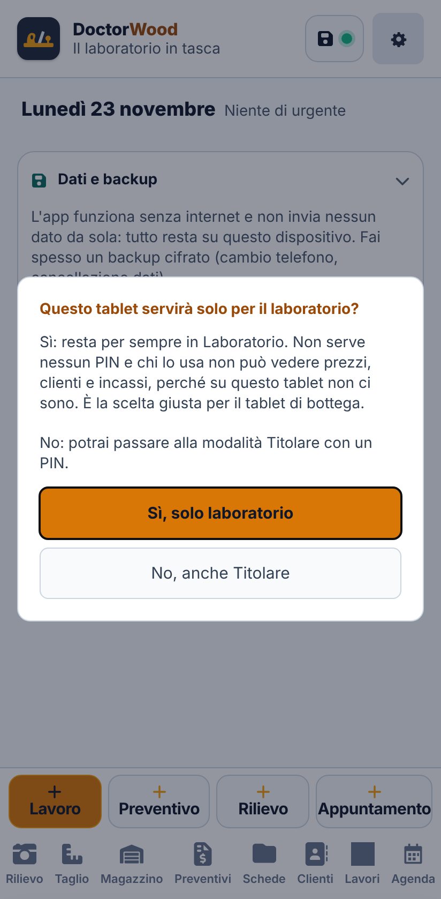
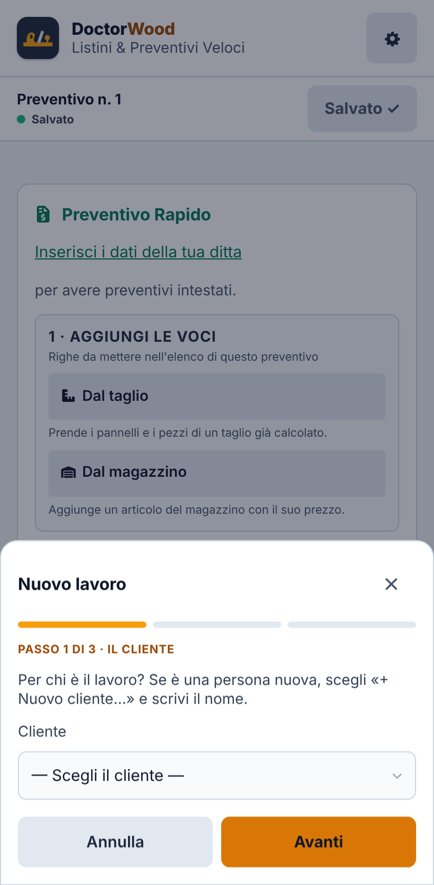
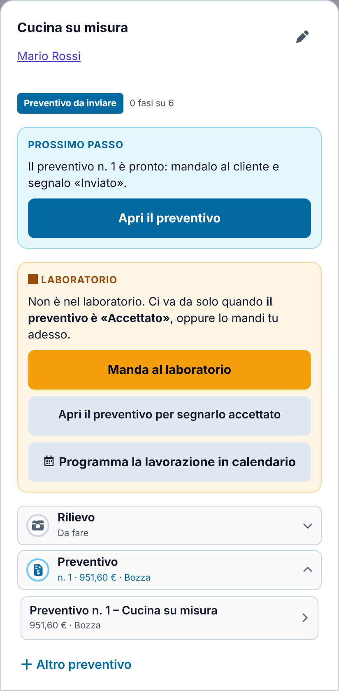
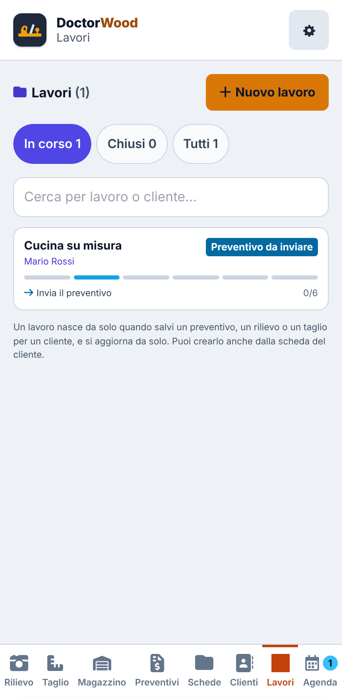
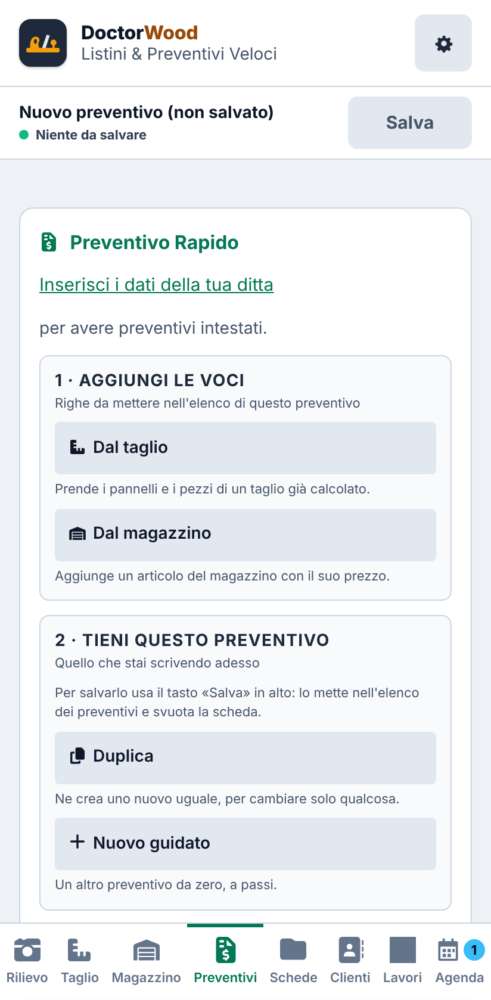
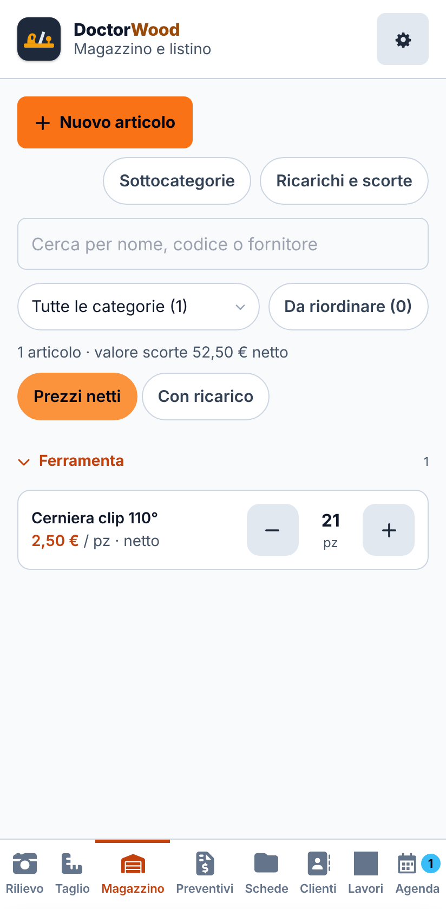

DoctorWood
Il laboratorio in tasca
Tutorial
Come si fa, passo per passo: una scheda per ogni cosa
Versione dell'app {{VERSIONE}} · aggiornato il {{DATA}}
La prima volta, su un telefono o tablet Android 10 o più recente.

Quando esce una versione nuova (DoctorWood controlla da sola una volta a settimana, anche sul tablet).

Al primo avvio, sul tuo telefono.

Al primo avvio, sul tablet di bottega.

Prima del primo preventivo.

Ogni mattina.

Un cliente nuovo.

Arriva una commessa.

Per non dimenticare niente.

«A che punto è la cucina dei Rossi?»

In cantiere.

Rilievo, consegna, montaggio.

Per sapere quanti pannelli servono e come tagliarli.
Per un mobile classico: base, pensile, colonna…

Dopo il calcolo.
Per la sezionatrice e per il laboratorio.

Il cliente aspetta il prezzo.

Il cliente accetta di persona.
Quando c'è da fare la fattura.

Un materiale nuovo nel listino.
Prima di chiamare il fornitore.
Una volta sola, con telefono e tablet nella stessa Wi‑Fi.
Il lavoro è pronto da produrre.
Per bloccare i giorni in calendario.

In bottega, sul tablet.
Un pezzo appena tagliato.
Dal telefono del titolare.

Le istruzioni di una cerniera o di una guida.
Per escluderlo subito.
Ogni due settimane, e prima di cambiare telefono.
Su un telefono nuovo.
Per proteggere prezzi e clienti.
Prima di vendere o regalare il dispositivo.

Per adattare l'app.
Per non riscrivere sempre le stesse cose.

Per scriverci.
Se l'app ti è utile.